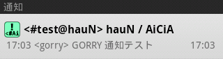

[サーバ設定の選択]メニュー
メインメニューから[サーバ]を選ぶと、IRCサーバの登録を行うことができます。
メニューには、これまで登録したIRCサーバの一覧と、[新しいサーバ設定の追加]がリスト表示されます。
- 新しいサーバ設定の追加
-
IRCサーバを新規登録します。
- サーバリスト
-
[サーバ設定]メニュー登録したサーバを選択すると、[サーバ設定]メニューが表示されます。接続情報の編集 登録したIRCサーバ情報の変更を行います。 接続 IRCサーバへの接続を行います。 切断 IRCサーバからの切断を行います。 接続情報の削除 このサーバ設定を削除します。
サーバ設定
[サーバ設定]ダイアログ
IRCサーバ設定を編集することができます。
| 設定名 | このサーバ設定の名前を指定します。 | |
|---|---|---|
| ホスト名 | IRCサーバが稼動しているホスト名（irc.ircnet.ne.jpなど）を指定します。 | |
| ポート | IRCサーバが稼動しているポート番号（6667など）を指定します。 | |
| パスワード | 接続パスワードが必要なIRCサーバの場合、指定します。 | |
| Nick | IRC上で使用するユーザー名を指定します。 | |
| ユーザー名 | 使用者の名前を任意に指定することができます。 | |
| 実名 | 使用者の実名を任意に指定することができます。 | |
| 文字コード |
接続するIRCサーバ内で使用されている文字コードを指定します。[選択]ボタンをクリックすると、AiCiAが使用可能な全ての文字コードから選択することができます。
|
|
| Joinチャンネル |
接続開始時に入るチャンネル名（#net.gorry.aiciaなど）を指定します。２つ以上のチャンネルに入る場合は、チャンネル名を半角スペースで区切って指定します。
|
|
| 通知キーワード |
指定された単語がチャンネル内の発言に含まれた場合、その部分を強調表示します。必要であれば、音声や振動などを発生させることもできます。 単語は英大文字・小文字を区別しません。また、２つ以上の単語を半角スペースで区切って指定すると、それらのいずれか１つの単語が発言に含まれたときに通知を行います。
|
|
| SSLで接続 | IRCサーバがSSL接続を要求する場合、ONにします。 | |
| 自動接続 | メインメニューの[接続]ボタンで接続を開始したいとき、ONにします。 | |
| 自動再接続 | 接続が途切れた場合に自動的に再接続を行いたいとき、ONにします。 | |
| TweetIRCGateway コマンドを使用 |
TIGモードで接続を行うとき、ONにします。
|
|
| システムメッセージを サブログにも出力 |
各チャンネルでIRCシステムにより表示されるメッセージ（薄い色で表示される）を、メインログウィンドウだけでなくサブログウィンドウにも出力します。
このスイッチをONにすることで、各チャンネルに対して「サブログにも出力」するかどうかを設定することができるようになります。
このスイッチをOFFにすると、このサーバ内のすべてのチャンネルで「サブログへのシステムメッセージ出力」は停止します。
|
|
| 通知行をOSの 通知システムで表示 |
通知が行われるとき、OSの通知システムにその行を表示します。通知をタップすることで、AiCiAで通知チャンネルを開くことができます。

通知の例 このスイッチをONにすることで、各チャンネルに対して「通知行をOSの通知システムで表示」するかどうかを設定することができるようになります。
このスイッチをOFFにすると、このサーバ内のすべてのチャンネルで「通知行をOSの通知システムで表示」は停止します。
このスイッチは、「環境設定」の[OSの通知システムで表示]がONであることが前提です。
|